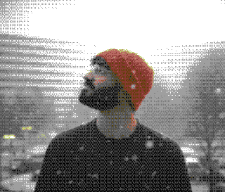

#!/usr/bin/env python3
"""software engineer.
ai/ml systems.
amsterdam."""
class Engineer:
def __init__(self):
self.current = "crunchr"
self.location = "amsterdam"
self.expertise = [
"ai/ml",
"full-stack",
"product",
]
self.also = "musician"
# scroll to continue
Building systems that outlast hype.
Too many magicians in AI. I'm a plumber.
I build for the second click, not the first impression.
Too many magicians in AI. I'm a plumber.
I build for the second click, not the first impression.
# about

engineer with 6+ years shipping software. currently building ai features at crunchr in amsterdam. msc data science from cardiff university. ex-amazon, ex-carestack.
maintaining the critical human touch to improve lives through
responsible code.
# work
$ git log
--author="vivek" --pretty="%ad %s"
--date=short
dec 2022-now (3yr 2mo)
software engineer
crunchr, amsterdam
jun 2021-sep 2021
devops engineer
amazon, hyderabad
jun 2018-jun 2021
software development engineer - ii
carestack, thiruvananthapuram
# full details? feel free to shout@vivek.ooo
# education
cardiff university / prifysgol caerdydd
master of science - data science and analytics
cardiff, united kingdom · sep 2021 - oct 2022
university of kerala
bachelor of technology - computer science and engineering
thiruvananthapuram, kerala, india · jun 2014 - jun 2018
# contact